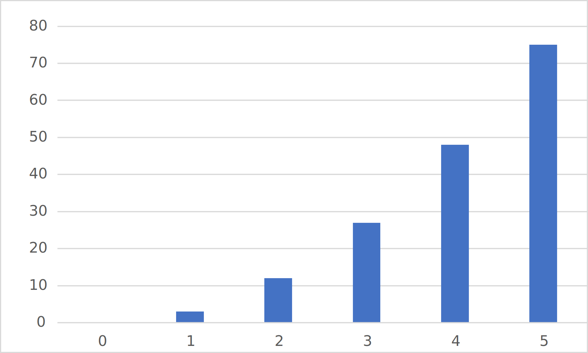
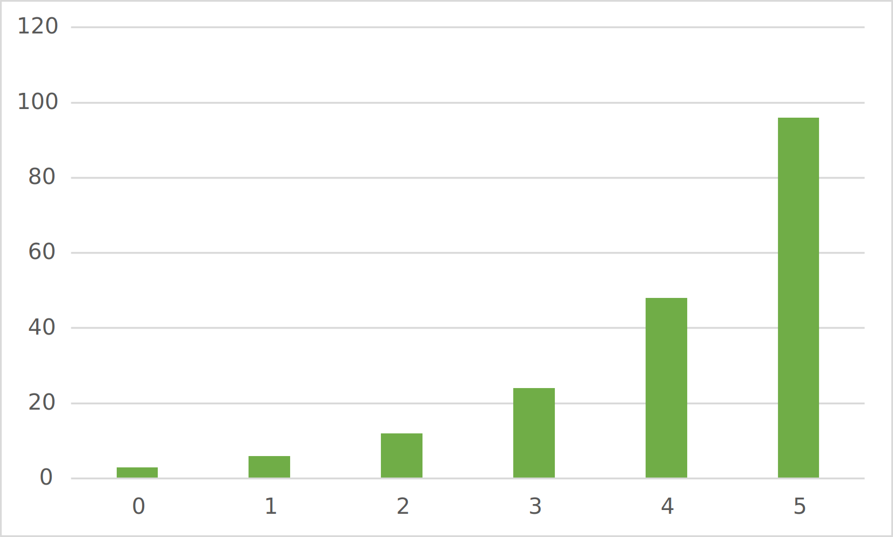
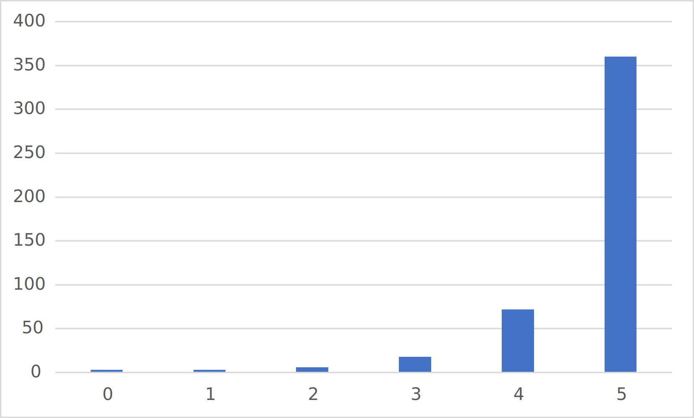
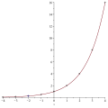
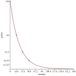

We have learned how to identify exponential data (Section 3.4) and have learned to work with some exponential applications (Section 6.1). Here we will consider traits of graphs of exponential functions.
Subsection6.2.1Shape of Exponentials
Our first examples are discrete data. One example is the number of views of a video per day. This can be 10 or 21 but never 21.3 (we are not considering the percent of a video viewed). Figure 6.2.3 contains a bar chart for exponential data.
First, we ask ourselves how we can identify discrete exponential relations from a graph, and consider how we should make graphs so the distinction between exponential growth and other growth is clear.
Checkpoint6.2.1.
Compare the exponential data in Figure 6.2.3 to the quadratic data in Figure 6.2.2. We know that the exponential grows faster than the quadratic from Subsection 6.1.1.
(a)
What (if anything) makes it clear that the exponential data is growing faster?
(b)
What (if anything) hides the faster rate of growth of the exponential?
We know that factorial data grows faster than exponential data. Repeat Checkpoint 6.2.1 with the exponential and factorial graphs.

Figure6.2.2.Bar Chart of Quadratic Data

Figure6.2.3.Bar Chart of Exponential Data

Figure6.2.4.Bar Chart of Factorial Data
We also have continuous exponential data that we can graph as curves.
Example6.2.5.
Graph \(y=2^x\text{.}\)
Solution.
First we will generate a table of points with which to start.
\(x\)
\(2^x\)
\(-4\)
\(2^{-4}=\frac{1}{2^4}\)
\(=\frac{1}{16}\)
\(-3\)
\(2^{-3}=\frac{1}{2^3}\)
\(=\frac{1}{8}\)
\(-2\)
\(2^{-2}=\frac{1}{2^2}\)
\(=\frac{1}{4}\)
\(-1\)
\(2^{-1}=\frac{1}{2^1}\)
\(=\frac{1}{2}\)
\(0\)
\(2^0\)
\(=1\)
\(1\)
\(2^1\)
\(=2\)
\(2\)
\(2^2\)
\(=4\)
\(3\)
\(2^3\)
\(=8\)
\(4\)
\(2^4\)
\(=16\)
We can plot these points then sketch a curve smoothly through the points.

Checkpoint6.2.6.
Describe the curve in Example 6.2.5. Don’t try to remember mathematical terms. What we need is phrasing we can remember and use to sketch other exponential curves.
In Subsection 6.1.1 we looked at exponentials as they increase which on all of these graphs is toward the right. Now we will consider the exponential going to the left.
Example6.2.7.
In Checkpoint 6.1.9 we determined that the amount of bacteria was modeled by
\begin{equation*}
b = 30(2^{t/25})\text{.}
\end{equation*}
Initially (\(t=0\)) there are 30 g of bacteria. Now we will calculate how much bacteria there was before this initial measurement.
\(0\)
\(30(2^{0/25})\)
\(=30 \cdot 1\)
\(=30\)
\(-25\)
\(30(2^{-25/25})\)
\(=30 \cdot \frac{1}{2}\)
\(=15\)
\(-25\)
\(30(2^{-50/25})\)
\(=30 \cdot \frac{1}{4}\)
\(=15\)
\(-25\)
\(30(2^{-75/25})\)
\(=30 \cdot \frac{1}{8}\)
\(=7.5\)
\(-25\)
\(30(2^{-100/25})\)
\(=30 \cdot \frac{1}{16}\)
\(=3.75\)
We notice that the amount of bacteria decreases. More specifically we see that it is divided in half each time. This is in contrast to doubling each time as it grows.
We also notice that because it is divided in half, there is always some left. No matter how far back in time we go, there will always be some. This is part of all exponentials: rapid growth in one direction and a gentle decrease toward some amount (zero in this case) in the other direction.
The model measures the bacteria by weight in grams. This can always be cut in half. What reality constraint should we put on this model?
Radioactive substances are not stable. The radiation they give off is the result of the atoms breaking down into other substances. This means that the amount of the original substance decreases over time. It has been shown that this decrease is exponential. The rate of decay is expressed in half-life, the amount of time for the substance to be reduced by half.
Example6.2.8.
Uranium-242 has a half-life of 16.8 minutes. Suppose we begin with \(13\bar{0}\) g of uranium-242.
(a)
How much is left at times 16.8, 33.6, and 50.4 minutes?
Solution.
At time 0 we have \(13\bar{0}\) g. At time 16.8 it will be half of the original which is \(65\) g. At time 33.6 it will be reduced by half twice (\(33.6/18.8=2\)). Thus there will be \(\frac{13\bar{0}}{2 \cdot 2} \approx 33\) g. At time 50.4 it will be reduced by half three times (\(50.4/16.8=3\)), so the amount remaining will be \(\frac{13\bar{0}}{2 \cdot 2 \cdot 2} \approx 17\) g.
(b)
Write a model for this decay.
Solution.
We can use the process from Subsection 6.1.3. The time in minutes is divided by the half-life 16.8 minutes. Because this is reducing by half the scale is \(\frac{1}{2}\text{.}\)
\begin{equation*}
A = 13\bar{0}\left(\frac{1}{2}\right)^{t/16.8}
\end{equation*}
(c)
Graph this model.
Solution.
We can use the points from the first task and the method from Example 6.2.5.

Notice the gentle decrease toward zero is to the right this time as opposed to the left in Example 6.2.5. That is because we are cutting in half each time instead of doubling.
Checkpoint6.2.9.
Atenolol has a half life of 6-7 hours depending on patient factors. For this problem use a half life of 6 hours. Suppose Victor is prescribed \(5\bar{0}\) mg/day. If Victor takes his first 50 mg pill Monday morning, how much is still in his blood Tuesday morning at the same time?
Graph the amount of atenolol in his blood for the first day.
Answer.
\(3\)
Solution.
A day is 24 hours so there are \(24/6=4\) times that the amount of the drug in the body will be reduced by half. Because the initial amount was \(5\bar{0}\) mg the amount the next day is
In Section 5.4 we learned how to shift and stretch parabolas (graphs of quadratics). Those same transformations work on exponentials (and any other function).
Checkpoint6.2.11.
Graph each of the following using the graph in Example 6.2.5.